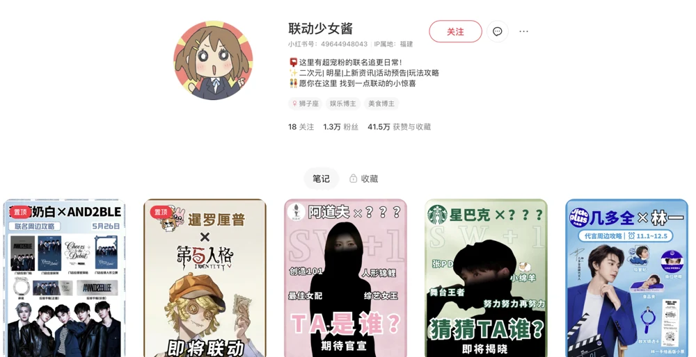
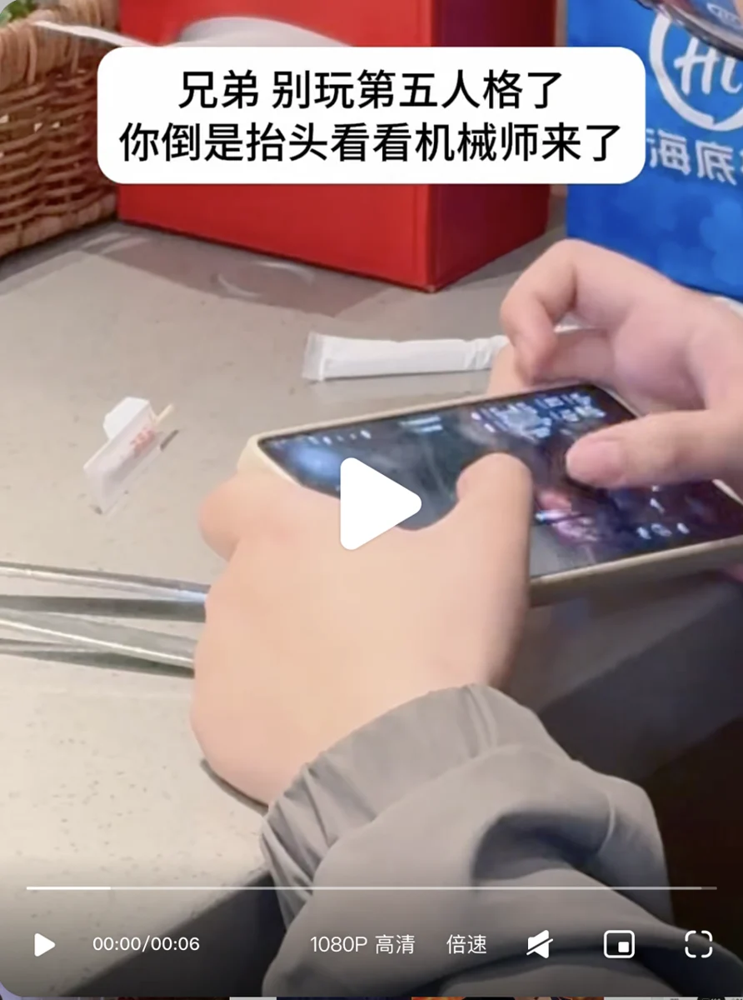

艾迪因赛
新媒体运营


从 0 启动，也从现场发现内容。
独立完成「联动少女酱」的账号定位、选题、图文制作与发布复盘。
在品牌营销项目现场寻找素材，完成拍摄、文案、剪辑与发布。
查看相关案例 ↗01吴晨渝的
2026作品集
PERSONAL FILE / 2026
把观察，做成内容。
新媒体运营


独立完成「联动少女酱」的账号定位、选题、图文制作与发布复盘。
在品牌营销项目现场寻找素材，完成拍摄、文案、剪辑与发布。
查看相关案例 ↗01四段实践，各有侧重。
继续向下滚动，翻阅每一份案例档案。
视频作品 · 选辑
左右滑动浏览 · 点击播放视频
新媒体运营 / 内容策划 / 影视综宣传